Trail Surface Design and Maintenance
Trail Surface Design and Maintenance is the systematic process of creating and preserving a trail’s functional integrity by addressing environmental stresses, subgrade conditions, water accumulation, hazardous crossings, steep or unstable terrain, and limited construction corridors. It delivers a comfortable, safe, and accessible surface—typically a durable concrete slab with appropriate mix design, cross‑slope, drainage, reinforcement over shallow culverts, and full‑width detectable warnings—while respecting site constraints such as right‑of‑way width and intersection geometry. Ongoing performance is ensured through uniform subgrade preparation, strict dimensional tolerances, and a long‑term management plan that includes annual pavement reviews and dedicated maintenance budgeting. [2]
Sources (2)
Purpose and applicability
Trail Surface Design and Maintenance addresses the fundamental risk that a trail will lose its functional integrity and safety over time because of environmental stresses, inadequate subgrade, water accumulation, hazardous crossings, steep or unstable terrain, and constrained construction corridors. By doing so it also ensures the delivery of a trail that is simultaneously comfortable, safe, and functional for all users while integrating existing site constraints. [2]
The figure below illustrates how water can accumulate within the drainable subbase when adequate drainage is not provided.
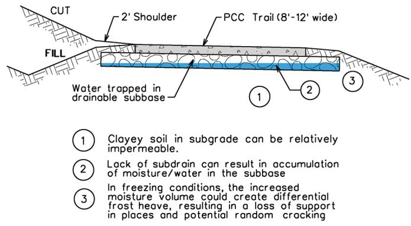
Cross-section of a trail pavement showing water trapped in the drainable subbase due to lack of drainage. [2]A layer labeled “Water trapped in drainable subbase” is shown accumulating at the bottom of the aggregate base layer. The source context explains that without a drainage outlet, the subbase layer can trap water and freeze-thaw cycles can create faulting and pavement cracking. This figure illustrates a specific failure mode related to inadequate drainage that Trail Surface Design and Maintenance aims to prevent.
[2] — Choosing Concrete for Trail Pa… (p. 13), Cross Slope (pp. 16–17), Maintenance (p. 12), Narrow Corridors (p. 21), Retaining Walls (p. 21), Shallow Culverts (p. 20), Smoothness Requirements (p. 24), Subgrade Support (p. 13), Trail Crossings of Roadways (p. 18), Truncated Domes and ADA Ramps (pp. 27–28), Utility Access Castings (p. 27)
Concrete surface design and maintenance—especially thickened slabs—is appropriate in three key situations: (1) at gravel‑road or field‑entrance crossings where a change of material could cause accidents and the crossing must support farm equipment or other heavy loads; (2) over shallow culverts (less than two feet of cover) where reinforcement is needed to prevent flexural cracking and low‑load paving equipment can protect the underlying base; and (3) within narrow right‑of‑ways that still provide planned staging zones and allow bridge‑first sequencing, enabling turnarounds for concrete deliveries. In all other contexts a different method should be used: when heavy loading is not expected at a crossing, signage or flexible barriers can replace thickened pavement; if the culvert has more than two feet of cover or poses no collapse risk, conventional paving methods suffice; and where the corridor cannot accommodate the required equipment, lacks adequate turn‑around space, or the bridge cannot bear the loads, an alternative surface treatment should be selected. [2]
The figure below illustrates a thickened and widened concrete section at a field entrance crossing, demonstrating one of the specific applications where this design is appropriate.
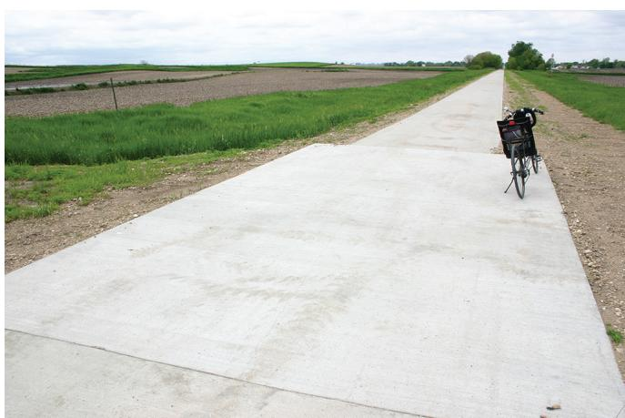
Thickened/widened section on field entrance crossings [2]The image displays a concrete trail extending through an agricultural landscape, featuring a distinct thickened and widened slab at the point where it intersects with a gravel road.
[2] — Narrow Corridors (p. 21), Shallow Culverts (p. 20), Trail Crossings of Roadways (p. 18)
Required inputs
Trail surfaces are most commonly constructed from concrete, requiring a durable mix that can resist freeze‑thaw cycles and provide long‑term performance with minimal maintenance. The mix should be capable of being placed as a thickened slab—typically six inches or more where the trail meets residential driveways and thicker where it intersects commercial roads, farm entrances, or field crossings—to accommodate heavier vehicle loads. Where the alignment encounters retaining walls or shallow culverts, a structural concrete mix with reinforcement is specified to resist flexural cracking and to serve both deck and wall functions.
Successful installation depends on a uniformly supportive subgrade. Subgrade preparation generally involves scarifying and recompacting existing soils to achieve consistent bearing capacity; moisture and density control may be incorporated as needed. Non‑permeable support materials are preferred, and a drainable rock subbase is usually unnecessary. Site conditions such as intersection geometry must be evaluated to preserve sight distance for trail users and oncoming traffic, and crossing sections should be oriented perpendicular when possible. In narrow corridors, construction staging, turn‑around areas for concrete delivery, and periodic stockpiling of shoulder material are required to protect freshly placed pavement. [2]
The following figure illustrates a typical concrete trail cross section.
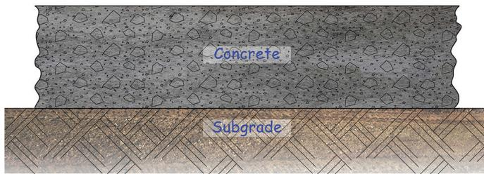
Concrete trail cross section [2]The figure displays a vertical cross-section of a paved path consisting of two distinct layers: an upper layer labeled “Concrete” and a lower support layer labeled “Subgrade.” This visual representation illustrates the structural composition required for trail surface design, specifically highlighting the relationship between the durable concrete slab and the underlying soil.
[2] — Choosing Concrete for Trail Pa… (p. 13), Narrow Corridors (p. 21), Retaining Walls (p. 21), Shallow Culverts (p. 20), Subgrade Support (p. 13), Trail Crossings of Roadways (p. 18), Truncated Domes and ADA Ramps (pp. 27–28)
Trail surface design must satisfy drainage, accessibility, structural integrity at crossings and over shallow structures, and tactile‑warning requirements while adhering to strict dimensional tolerances. A cross‑slope of at least 1 % is required for drainage and accessibility; shared‑use paths are limited to 2 % and designers typically adopt a 1.5 % slope to accommodate construction tolerance. When the cross‑slope changes, AASHTO mandates a transition length of at least five feet for each one‑percent change to ensure a smooth grade shift. At road crossings the alignment should be perpendicular to provide adequate sight distance, and the pavement slab thickness must follow local roadway standards—commonly six inches for residential driveways or matching the existing road thickness for commercial/industrial accesses, with optional widening to clearly define the slab area. Shallow culverts are identified as those having less than two feet of cover; they require thickened concrete sections and reinforcement, and paving should be performed with low‑load equipment (fixed‑form, extension, or truss screeds) while heavy loading is avoided to prevent collapse. Detectable warnings must extend across the full width of a trail opening, excluding only the sloped flare areas, and be installed at the back of the curb line in urban settings or at the shoulder edge in rural sections; any concrete border used for placement may not exceed two inches from any joint or edge per the Public Right‑of‑Way Accessibility Guidelines. No additional preconstruction testing is prescribed beyond meeting these dimensional tolerances. [2]
The following figure illustrates paved crossings of gravel roads.
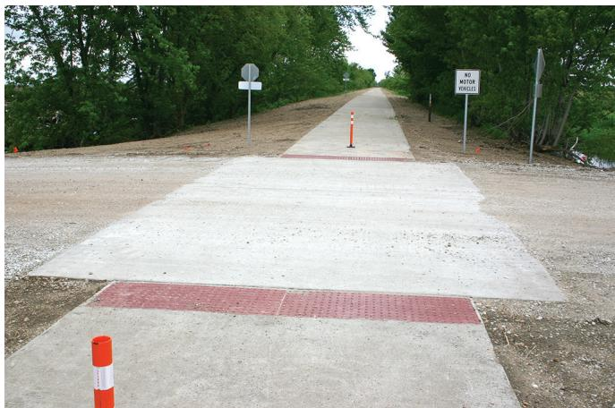
Paved crossings of gravel roads [2]The image displays a concrete trail crossing that extends across an unpaved gravel road, featuring red tactile warning surfaces at the transition points.
[2] — Cross Slope (pp. 16–17), Shallow Culverts (p. 20), Trail Crossings of Roadways (p. 18), Truncated Domes and ADA Ramps (pp. 27–28)
Work sequence
Before any trail surface design or maintenance work can start, a long‑term management plan must be established. This planning is achieved through annual pavement reviews and the allocation of a dedicated maintenance budget. The subgrade must be prepared to provide adequate and uniform support; scarifying the existing ground, recompacting it to the required density, and applying moisture or density control when necessary creates a stable base. Construction planning and project design should include consideration for stockpiling of shoulder material along the edge of the corridor in regular intervals prior to paving, with staging areas identified for concrete delivery turnarounds. [2]
The figure below illustrates how buggies facilitate this process by providing efficient concrete delivery.
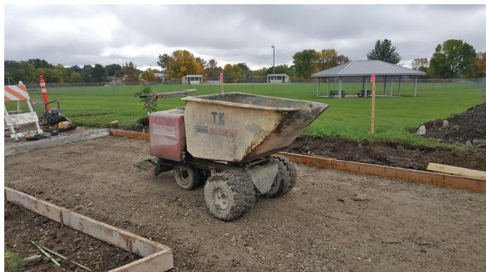
A tracked concrete buggy navigating a prepared subgrade at a trail construction site. [2]The image displays a tracked utility vehicle, known as a buggy, positioned on a dirt path bordered by wooden forms and green fields in the background. This equipment is used for concrete delivery to navigate efficiently along the proposed trail alignment without disrupting the compacted subgrade. The use of such machinery addresses the challenge of delivering materials to restrictive corridors where standard trucks cannot operate.
[2] — Maintenance (p. 12), Narrow Corridors (p. 21), Subgrade Support (p. 13)
First, planners identify the narrow right‑of‑way limits and establish staging zones that keep the construction footprint minimal; these zones will later serve as material stockpiles and vehicle turnarounds. Next, shoulder fill is stockpiled in regular intervals along the corridor edge before any pavement is placed so that material does not have to be hauled over fresh concrete. Then concrete paving is initiated at bridge structures and progressed outward, which provides better control of loading and curing than working toward the bridges. Finally, the pre‑positioned staging areas are used as turnarounds for concrete trucks, allowing deliveries without crossing newly laid pavement. [2]
The figure below illustrates the slipform paving technique employed during the construction of the Legacy Trail.
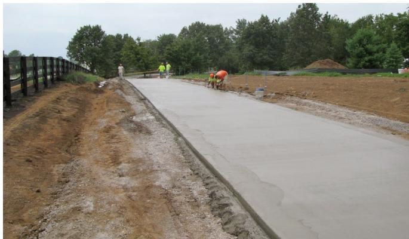
Slipform paving of the Legacy Trail surface. [2]The image displays a wide, freshly poured concrete slab being finished by workers in high-visibility gear along a cleared corridor bordered by dirt and trees.
[2] — Narrow Corridors (p. 21)
Long‑term trail management requires that maintenance activities be scheduled on a regular basis, with the guide recommending an annual pavement review followed by allocation of a maintenance budget. This yearly interval serves as the timing limit between completing surface design and initiating the next cycle of inspection and upkeep. [2]
The following figure illustrates a key component of this routine upkeep by showing ditch maintenance.
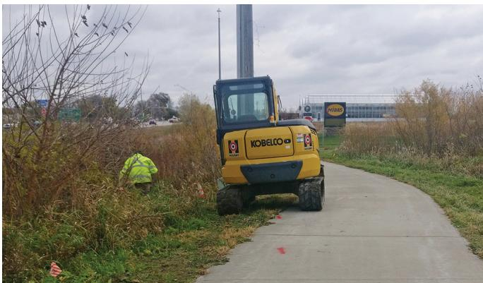
Maintenance equipment operating on a trail corridor. [2]The image displays a yellow excavator and a worker in high-visibility gear positioned next to a paved concrete path, illustrating the use of heavy machinery for site upkeep. This visual evidence supports the requirement that trail surfaces be designed with sufficient thickness to withstand loading from maintenance vehicles and construction traffic.
[2] — Maintenance (p. 12)
Staging and logistics
In narrow trail corridors the work zone is confined by planning construction limits and locating staging areas that keep the footprint as small as possible. Concrete paving should begin at bridge structures and progress outward, unless the bridge can accommodate loading from both directions. Shoulder material is stockpiled along the corridor edge at regular intervals before paving so it never has to be hauled over freshly placed pavement. The same staged zones double as turn‑around points for concrete trucks, allowing controlled delivery and movement of equipment within the limited access route. [2]
[2] — Narrow Corridors (p. 21)
The review of concrete‑paved trail design highlights a tightly interwoven set of space, site‑access, weather and environmental constraints. Weather is dominated by freeze‑thaw cycling, which can erode durability unless the subgrade is uniformly prepared and joints are correctly placed; the guide notes that “Concrete offers long-term durability even in harsh freeze/thaw environments.” Adequate drainage – a minimum 1 % cross‑slope within the 2 % maximum allowed by public right‑of‑way standards – mitigates standing water and slick surfaces during cold months. Snow removal further influences material choice, as some warning devices are vulnerable to damage.
Space constraints arise at intersections where sight distance must be preserved; “Intersection geometry is critical to review for assessment of sight distance for both the trail users and oncoming traffic, while considering the terrain on approach to the intersection,” and perpendicular crossings are preferred to limit exposure. The width of the right‑of‑way often limits the construction footprint: “Trail rights of way can be narrow and are constructed to create a path suitable for pedestrians and small vehicles rather than large construction equipment,” which forces planners to locate staging zones, turn‑around points for concrete trucks, and periodic shoulder stockpiles along corridor edges. Utility access castings must either sit outside the paved width or be fully embedded, with clear tolerances – no more than 2 in. from a joint or edge – as required by accessibility guidelines: “If the material requires a concrete border away from a joint or edge for proper installation, it shall be 2 in. or less per the Public Right‑of‑Way Accessibility Guidelines (USAB 2011).”
Environmental drivers include shallow culverts that limit subgrade uniformity and demand low‑load paving methods, as well as retaining walls where terrain restricts trail width. All of these constraints shape both the initial design decisions and the ongoing maintenance regime for concrete trail surfaces. [2]
The following figure illustrates a combined retaining wall and trail to demonstrate how terrain constraints influence surface design.
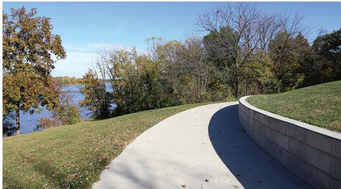
A concrete trail curving along a grassy slope with an integrated retaining wall. [2]The image displays a paved path that curves alongside a grassy embankment, supported by a low concrete retaining wall on the right side. This visualizes how trail and wall can be combined into a single system to accommodate construction in certain terrain.
[2] — Choosing Concrete for Trail Pa… (p. 13), Cross Slope (pp. 16–17), Narrow Corridors (p. 21), Retaining Walls (p. 21), Shallow Culverts (p. 20), Subgrade Support (p. 13), Trail Crossings of Roadways (p. 18), Truncated Domes and ADA Ramps (pp. 27–28), Utility Access Castings (p. 27)
Quality control and acceptance
Inspection of trail surfaces must verify several key characteristics. First, the subgrade must provide “adequate and uniform subgrade support”; test procedures should measure moisture content and compaction density to confirm they meet design specifications, noting that “Moisture and density control may also be incorporated into the design when necessary.” Because a drainable rock subbase is generally unnecessary, inspectors should ensure that “non‑permeable support materials are preferred.” Second, the riding way must be uniformly smooth for user comfort – “The trail surface should be smooth for the comfort of pedestrians and bicyclists.” – while preserving traction; therefore surface evenness, tactile grip, and “friction and skid resistance of the trails should not be compromised for the sake of smoothness” are evaluated, with construction methods such as slipform paving or transverse saw‑cut joints used to achieve the required finish. Third, detectable warnings must extend continuously across the opening, with no gaps except for sloped flares – “The detectable warning must provide full coverage across the trail opening, except for the sloped flares.” When a concrete border is required it shall not exceed two inches (“If the material requires a concrete border away from a joint or edge for proper installation, it shall be 2 in. or less per the Public Right‑of‑Way Accessibility Guidelines”). The type of warning material must be verified: cast‑iron units are preferred in high snow‑removal areas, and composite panels inspected for dome shear and secured with bolt‑on connections (“Composite material panels suffer from domes shearing off; however, they can be installed as replaceable panels with bolt‑on connections”). Any damage observed during snow clearing, such as truncated domes, must be documented (“Figure 45 shows damage to truncated domes during snow removal”). [2]
The following figure illustrates a utility access casting installed completely within the trail pavement slab.
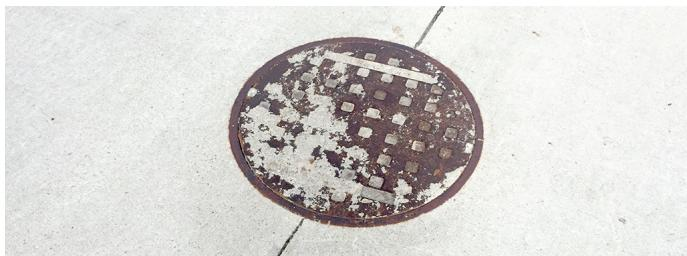
Utility access casting—completely within trail pavement slab [2]The image displays a circular, rusted metal utility cover set flush into a light-colored concrete surface. The casting is positioned entirely within the boundaries of the trail pavement slab rather than at an edge or joint.
[2] — Smoothness Requirements (p. 24), Subgrade Support (p. 13), Truncated Domes and ADA Ramps (pp. 27–28)
Measurements of the trail surface are built into the long‑term management plan by conducting pavement reviews on an annual basis, which then guide maintenance budgeting and scheduling. [2]
The following figure illustrates a typical pavement evaluation process used to assess conditions before applying a concrete overlay.
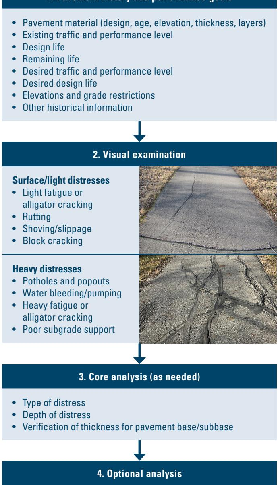
Flowchart for pavement evaluation and distress classification prior to overlay placement. [2]The figure presents a flowchart outlining the process of evaluating existing asphalt surfacing, beginning with gathering historical data on material properties and traffic levels before proceeding to visual examination. It categorizes pavement conditions into “Surface/light distresses” such as light fatigue or rutting, and “Heavy distresses” including potholes and poor subgrade support, which must be addressed before overlay placement. The process further includes core analysis to verify thickness and support layer stability, ensuring the subgrade is uniform enough to support a new concrete surface.
[2] — Maintenance (p. 12)
Safety and environmental controls
The review identifies several safety concerns arising from trail surface design and maintenance. Inadequate drainage can allow water to accumulate and freeze, creating slick patches that present slip hazards for pedestrians and cyclists, especially during cold months. At roadway intersections, unpaved gravel approaches generate windrows of loose material at the edge of the road, increasing the risk of slip‑and‑trip accidents for trail users. Work over shallow culverts poses a collapse danger: paving equipment can disturb the underlying base and trigger failure of the structure, while heavy loads exacerbate the potential for a sudden collapse that endangers both crew members and downstream trail users. Finally, the installation and maintenance of detectable warning surfaces introduce ergonomic and cutting hazards for workers handling cast‑iron units, and composite panels are prone to dome shearing, which can produce falling debris and compromised tactile warnings that become additional trip or slip hazards for the public. [2]
[2] — Cross Slope (pp. 16–17), Shallow Culverts (p. 20), Trail Crossings of Roadways (p. 18), Truncated Domes and ADA Ramps (pp. 27–28)
Curing, protection, and handoff
To safeguard the newly placed concrete over shallow culverts, designers employ thickened concrete sections together with reinforcement, which helps resist flexural cracking and panel movement caused by storm‑water infiltration or settlement. During construction heavy loads are kept off these areas to prevent collapse of the underlying structure, and low‑load paving techniques such as fixed‑form, extension or truss screeds are preferred for installing the surface over the culvert. [2]
The figure below illustrates a typical bridge abutment paving notch and reinforced approach slab, which exemplifies these reinforcement strategies.
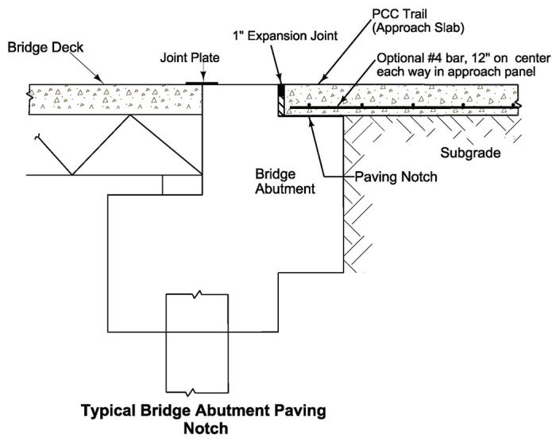
Typical bridge abutment paving notch and reinforced approach slab [2]The figure illustrates a cross-section of a concrete trail surface transitioning from the main deck to an approach panel supported by a bridge abutment. It details specific construction elements such as a paving notch, expansion joint, and optional reinforcement bars within the subgrade area.
[2] — Shallow Culverts (p. 20)
Expected performance and maintenance
Common failures in trail surface design and maintenance include shrinkage cracking when subgrade preparation or joint placement is inadequate—“With proper subgrade preparation and proper joint placement, shrinkage cracks can be controlled”. Over shallow culverts (less than two feet of cover) the pavement is vulnerable to flexural cracking, settlement‑induced distress, and even panel collapse under heavy loads; “Culverts with less than two feet of cover over the structure are considered shallow.” Detectable‑warning elements also deteriorate: composite panels may lose their domes, as “Composite material panels suffer from domes shearing off”, and truncated domes can crack or break during snow removal. Improper concrete border placement beyond two inches from a joint or edge further accelerates premature failure. [2]
The figure below illustrates concrete pavement reinforced with fibers to mitigate such issues, showing a surface that exhibits only minor hairline cracking.
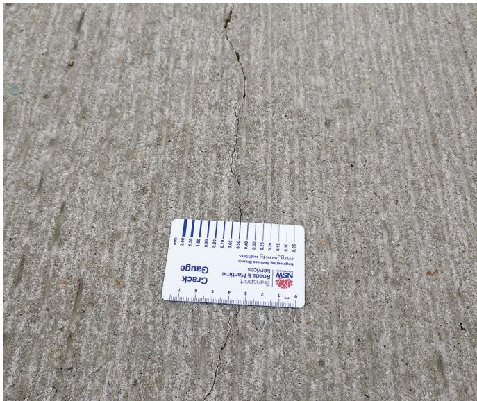
Concrete pavement with fibers and hairline crack [2]The image displays a section of concrete pavement featuring a vertical hairline crack running through the surface. A white plastic Crack Gauge card is placed adjacent to the fracture to provide scale and measure its width.
[2] — Choosing Concrete for Trail Pa… (p. 13), Shallow Culverts (p. 20), Truncated Domes and ADA Ramps (pp. 27–28)
Effective preventive maintenance for concrete trail surfaces begins with proactive planning: agencies should “plan for future maintenance activities” and conduct “annual pavement reviews” while allocating a dedicated “maintenance budget allocation.” Proper subgrade preparation and accurate joint placement are critical; as the guide states, “With proper subgrade preparation and proper joint placement, shrinkage cracks can be controlled,” which limits later repair work. Routine monitoring must include visual inspections for emerging cracks, flexural distress over shallow culverts, and any base disturbance after events such as snow‑removal. Over culvert crossings, preventive measures call for “thickened concrete sections and/or reinforcing” and the use of “Low-load paving methods (e.g., fixed form, extension screeds, truss screeds)” because “Heavy loading should be avoided if there is a potential for collapse of the culvert.” Inspections should verify that any required concrete border from joints or edges does not exceed two inches per accessibility guidelines (“If the material requires a concrete border away from a joint or edge for proper installation, it shall be 2 in. or less per the Public Right-of-Way Accessibility Guidelines (USAB 2011).”). When minor cracking appears, “local agency staff can handle the repairs without needing to outsource,” and reinforcement can be added to arrest panel shift. In areas subject to snow removal, composite panels may experience dome shearing; damaged domes are repaired by swapping them with bolt‑on replaceable panels (“Composite material panels suffer from domes shearing off; however, they can be installed as replaceable panels with bolt‑on connections”). Selecting durable materials such as cast iron for high‑traffic snow‑cleared sections further reduces future wear. [2]
The following figure illustrates a concrete pavement section lacking fiber reinforcement, which demonstrates how such conditions can lead to the noticeable longitudinal cracking that preventive maintenance aims to avoid.
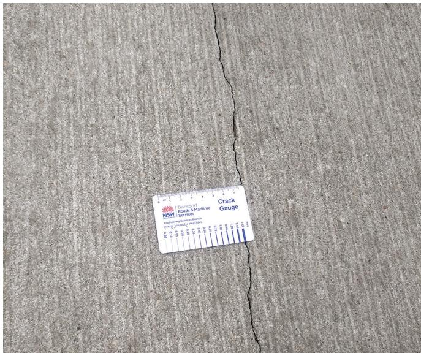
Concrete pavement without fibers and with noticeable longitudinal crack [2]The image displays a section of gray concrete pavement featuring a prominent, continuous vertical fissure running through the slab. A white plastic card labeled “Crack Gauge” is placed adjacent to the defect for scale and measurement purposes.
[2] — Choosing Concrete for Trail Pa… (p. 13), Maintenance (p. 12), Shallow Culverts (p. 20), Truncated Domes and ADA Ramps (pp. 27–28)
References
References
- P. Taylor, T. Van Dam, L. Sutter, and G. Fick, "Integrated Materials and Construction Practices for Concrete Pavement: A State-of-the-Practice Manual," National Concrete Pavement Technology Center, Rep. Part of InTrans Project 13-482; TPF-5(286), 2019. [Online]. Available: https://www.cptechcenter.org/wp-content/uploads/2019/12/IMCP_manual.pdf
- J. Gross, R. Voelker, G. Smith, and J. Hansen, "Guide to Concrete Trails," National Concrete Pavement Technology Center, 2019. [Online]. Available: https://www.cptechcenter.org/wp-content/uploads/2019/08/concrete_trails_guide.pdf